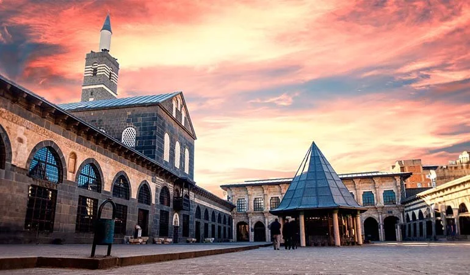
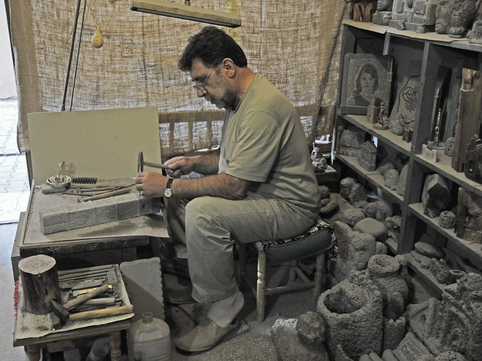

MALABADİ KÖPRÜSÜ

HEVSEL BAHÇELERİ
HASANPAŞA HANI
İÇ KALE
Kökleri Asurlar’dan Osmanlı’ya dek uzanan 9 bin yıllık geçmişiyle Güneydoğu Anadolu Bölgesi’ndeki en eski ve en büyük illerden biri olan, “Peygamberler Şehri” olarak da adlandırılan Diyarbakır; kültür ve tarih öğrenmeye meraklı herkesi kendine çeken bir şehir. Yöresel mutfağı, UNESCO Dünya Miras listesine girmiş Diyarbakır Kalesi ve Hevsel Bahçeleri ve daha onlarca gezilecek görkemli tarihi noktalarıyla Diyarbakır’ın tarihi ve doğal güzelliklerini tanımanız için yazımızı okuyup bizimle keyifli bir yolculuğa çıkmaya hazırlanın!
Diyarbakır' ın Kültürü
Diyarbakır, çok sayıda uygarlığın izlerini taşıyan, zengin tarihi ve kültürel birikimi ile medeniyetlerin Yerleşim alanı ve merkezi olmuştur. Bu sayede bir tarih ve kültür merkezi olma özelliğini her zaman Koruyabilmeyi başarmıştır. Diyarbakır’da sırasıyla Hurriler, Mitanniler, Hititler, Asurlar, Medler, Persler, Romalılar, Bizanslılar, Araplar, Selçuklular, Osmanlılar ve Selçuklular gibi büyük devletler hüküm Sürmüştür. Hurriler’den başlayarak Osmanlılara kadar uzanan yoğun bir tarihi geçmişi olan Diyarbakır’da Yaşayan medeniyetler, dönemlerine ait izlerle kenti ölümsüzleştirmişlerdir. Diyarbakır, el sanatları ve sivil mimari özellikleriyle de tarihi zenginliklerini geleceğe taşımaktadır.
Edebiyat Ve Müzik

Şevket Beysanoğlu’nun “Diyarbakırlı Fikir ve Sanat Adamları” kitabında 668 fikir ve sanat adamı yer almaktadır. Bunlardan 28’i şair, 171’i yazar, 193’u bilim adamı; 46’sı ise hattat, ressam ve bestekardır. Bunlardan 62’si Diyarbakır’ın El sanatları Örnekleri Osmanlı döneminden önce, 246’sı Osmanlı ve Cumhuriyet döneminde yaşamışlardır. Yazdıkları eserlerin toplamı 2000’i bulmaktadır. Diyarbakır’da halk edebiyatı denince akla hemen dengbejler gelir. Dengbej, “halk ozanı” ve “hikaye anlatan” anlamında kullanılmaktadır. Dengbejler, yöre yöre gezerek, efsaneleri, destanları anlatır, hayatlarını bu şekilde kazanırlar. Kaval veya sazla gezen dengbejler, gittikleri yerlerin türkü ve destanlarını da yeniden derleyip geliştirirler. Bu kültürü koruma yönünde birçok çalışma yapılmaktadır.
El Sanatları
Diyarbakır’ın geleneksel el sanatları içerisinde kuyumculuk, ipekçilik, bakırcılık önde gelmektedir. Şehrin el sanatları, 19. yüzyılın sonuna kadar çok ileri bir düzeyde idi. Eskisi kadar olmamakla birlikte günümüzde önemini koruyan bu el sanatlarında hasır bilezik, kişniş gerdanlık, gümüş işlemeli nalın ve çekmeceler Diyarbakır kuyumcularının beğenilen ürünleri arasındadır. İpek börekçiliği ise Merkez, Kulp, Silvan, Lice ilçelerinde yapılmakta, ipekli kumaşlar, mendiller ve puşular üretilmektedir. Çömlekçilik, saraçlık, Keçecilik, kilim, sicim, heybe dokumacılığı, işlemeli peşkir, peştamal ve halı dokumacılığı Diyarbakır’ın diğer el sanatı ürünlerini oluşturur.
Kuyumculuk
Diyarbakır’ın en önemli el sanatlarından birisi kuşkusuz kuyumculuktur. Hala eski tip üretimini sürdüren ailelerden işlenmiş ayna, gulabdan, nalin, ziynet, takunya, hasır bilezik ve gerdan başta olmak üzere takılarını korumak icin “pestahtah” adı verilen gümüş işlemeli sandıklar bulabilirsiniz. Kuyumculuk sanatının en büyük ismi 940 yılında bolgede doğan Ahmet Çelebi’dir. Ahmet Çelebi’nin yaptığı altın, gümüş ve mücevherata ilişkin ürünler oldukça ilgi görüyordu. Günümüzde kuyumculuk, Diyarbakır’ın en önemli sektörlerinden biri olmaya devam etmektedir. Ancak altın işçiliği yapan atölye sayısı oldukça azalmıştır. Konya’da Mevlana Türbesi’nin ikinci kapısı, Bağdat’taki İmam-ı Azam Türbesinin nefis altın ve gümüş işlemeli kapısı, avize, şamdan ve kandilleri Diyarbakır’da yapılmıştır.
İpekçilik
19. yüzyılda kırmızı kok boya ile boyanmış Diyarbakır ipliği Avrupa’da unluydu. Diyarbakır, ipek ve pamuk üretimi acısından önemini 19. yüzyıla kadar devam ettirmiştir. Özellikle Kulp, Silvan ve Lice ilçelerinde ipekçilik yaygındı. Yöre kilim, sicim, heybe dokuma özellikleriyle dikkat çekicidir. Silvan’da dokumacılık hala eski önemini sürdürmektedir. Özellikle dağ köylerinde yedi renkten oluşan desenli ve halk arasında “yemeni” olarak bilinen kilimler, çantalar, seccadeler üretilmektedir. Keçi kılından “kon” denilen siyah çadırlar, kilimler ve kaim ipler dokunmaktadır. İlçede halıcılık, battaniyecilik, rengarenk kazaklar, çoraplar ve daha nicelerinde ipekçilik sanatı kendine yer edinmiştir.
Bakırcılık
Alüminyum ve plastiğin yaygınlaşmasıyla birlikte bakır önemini eskiye oranla yitirmiştir. Ancak son dönemlerde bakır ile yapılan urun çeşitliliğinin artması, sus ve kullanım eşyası olarak farklı şekillerde sunulması bakıra ilgiyi tekrardan artırmıştır. Kaşık, şekerlik, semaver, sigaralık ,biblo, tabak, tepsi gibi sus eşyalarının üretimi sürmektedir.
Çinicilik
Diyarbakır’daki önemli geleneksel sanatlar arasındadır. Yöredeki köşk, konak ve camilerin çinilerinin
çoğu Diyarbakır’da üretilmiştir. İznik ve klasik Osmanlı çiniciliğinin genel özelliklerini taşısa da yöresel
motiflerde farklılık görülmektedir. Cini fırınları; Fatih Paşa ile Nasuh Paşa Camileri arasında, Zincirkıran
Türbesi civarında bulunmaktaydı. Ayrıca Lice ve diğer bölgelerde de seramik ve cini yapılmaktaydı.
Günümüzde birkaç atölyede cini üretimi yapılmaktadır.
Osmanlı döneminde çini üretim merkezlerinden biri olarak bilinen Diyarbakır’da, çini süsleme daha çok camilerde
karşımıza çıkmaktadır. Hüsrev Paşa Camii, İskender Paşa Camii, Ali Paşa Camii, Behram Paşa Camii, Melek Ahmet Paşa
Camii ve Akkoyunlu eseri olan Nebi Camii, söz konusu dönem çinileriyle süslenmiş örneklerdir. Osmanlı çinilerinin
mezar anıtlarındaki tek örneği ise Sahabeler Türbesi’nde yer almaktadır.